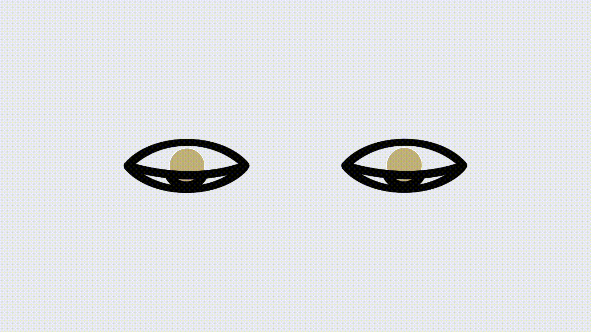
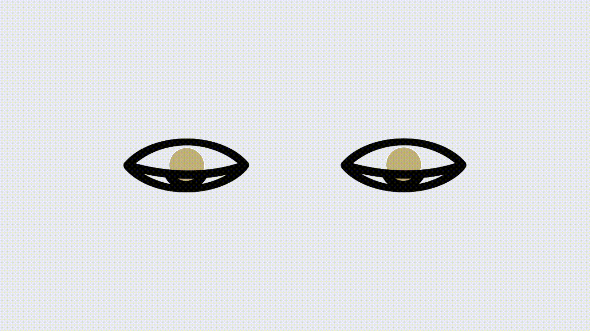

end
end
end
end
end
end
end
end


 8:15 am | Today
8:15 am | Today
 BY ERIN PEACE 3 MINUTE READ
BY ERIN PEACE 3 MINUTE READ
When radio broadcasting became popular in early 20th century, it was common to listen around a table or fireplace with the family. Public programs played jazz music, recounted sports scores and reported the news, and no marketing messages violated the intimacy of the family home.
The publicity manager for Westinghouse Co., J.C. McQuiston, believed that the public would not stand for any advertising coming from their precious new devices: “You may say you can turn it on at will and turn it off when you want to, but even so, who will want it?” he wrote in the August 1922 edition of Radio News. “Advertising must ride on some service, and in riding on that service it must not destroy the service… the medium for advertising must play second fiddle to the editorial and written pages.”
 “Advertising by Radio Cannot Be Done; It Would Ruin the Radio Business, for Nobody Would Stand for It.
“Advertising by Radio Cannot Be Done; It Would Ruin the Radio Business, for Nobody Would Stand for It.
While McQuiston’s ethics were strong, his prediction was wrong. By 1947, Nielsen radio ratings had determined a way to gather a seeming trove of data on listeners’ habits and preferences, laying the foundations for an emerging industry: radio advertising.
With the ratings, advertisers were able to specifically target groups of people based on their content-consumption habits (sound familiar?). Content producers were making a fortune, and soon altered their formats to better accommodate their new masters. Amos ‘n’ Andy, a popular radio sitcom, altered its weekly single-sponsor format to become a 30-minute daily program dotted with multiple advertisements throughout. The show became full of even more cliffhangers, gripping plot questions left dangling until after the commercial break.
Fast forward to the 1950s and we see how television employed similar techniques. Game shows like The $64,000 Question (and later, reality shows like The Real World) used pre-break cliffhangers to buy the same rapt consumer attention at a discount in order to resell it to desperate advertisers for a premium.
An extra tactic of these shows, too, was their ability to turn any regular Joe into a short-term celebrity. Paying its actors in attention was an extremely effective cost-cutting measure for the show, and it had the added bonus of inspiring aspirations of similar fame in its viewers’ minds.
This appeal to ego would find its footing with the rise in popularity of AOL email in the early 1990s. People were desperate to sit through their dial tones to receive the dopamine-inducing “You’ve Got Mail!” — and by the late 1990s, those millions of expectant eyes on screen were purchased in bulk by admen.
For it was the same game we’ve been playing since Benjamin Day’s New York Daily Sun waged a bet by bringing previously elite newspapers to the pedestrian level. Drive circulation with unmissable, salacious (and sometimes fake) content, and offset production costs by reselling readers’ attention to advertisers.
 Lithograph of the moon as described by journalist Richard Adams Locke in a series of New York Daily Sun articles that ran beginning August 1835. The features claimed to be reporting on evidence from famous contemporary astronomer Sir John Herschel. This fake news drove circulation statistics to record levels, confirming Sun editor Benjamin Day’s business proposition that content should be little more than a conduit for advertising. Source: Wikimedia Commons.
Lithograph of the moon as described by journalist Richard Adams Locke in a series of New York Daily Sun articles that ran beginning August 1835. The features claimed to be reporting on evidence from famous contemporary astronomer Sir John Herschel. This fake news drove circulation statistics to record levels, confirming Sun editor Benjamin Day’s business proposition that content should be little more than a conduit for advertising. Source: Wikimedia Commons.
And it’s the same game we’re playing now. Modern media moguls have coupled the allure of salacious content with the personalisation of email to bring us our most addicting advertising vehicle yet: social media.
With psychologically grounded techniques like infinite scrolling and personalised, intermittent variable rewards (notifications), we are induced to continue staring at ours screens and nonchalantly sharing information about ourselves that is fed through a maze of ad placement middlemen (and middlebots) to make a lot of money for a lot of other people.
The question is: is it the same game we will be playing in the future? Is there a future for media that serves the public, or will our precious new tech soon become overrun?
 “Where attention is paid, the attention merchant lurks patiently to reap his due.”
“Where attention is paid, the attention merchant lurks patiently to reap his due.”


 
